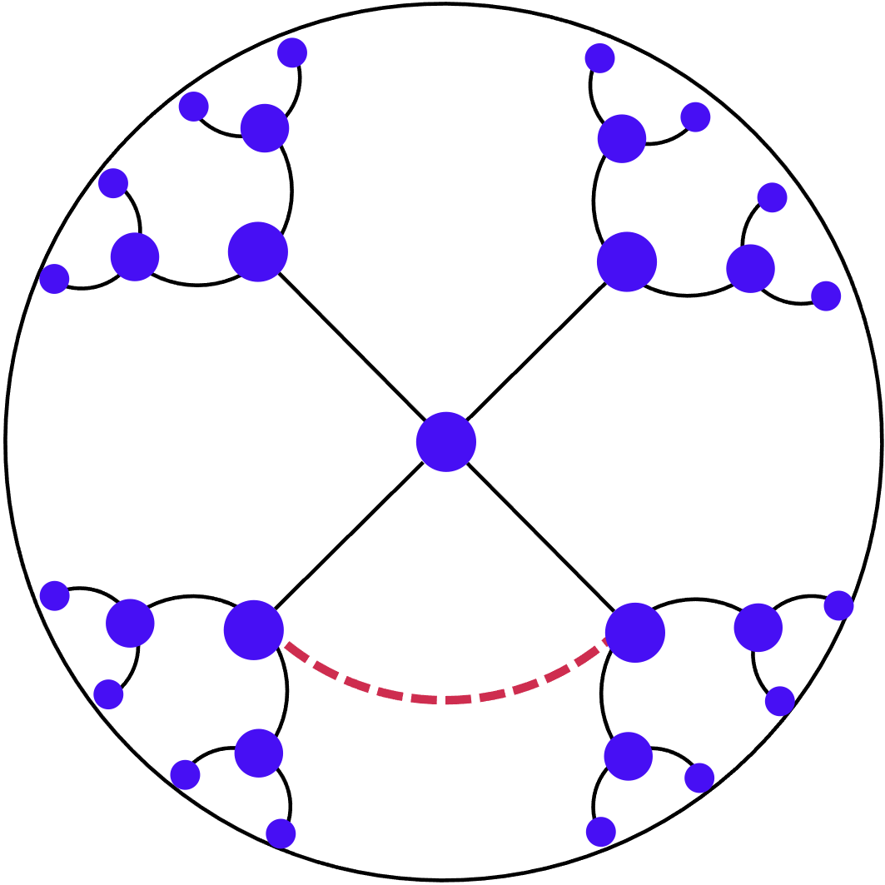
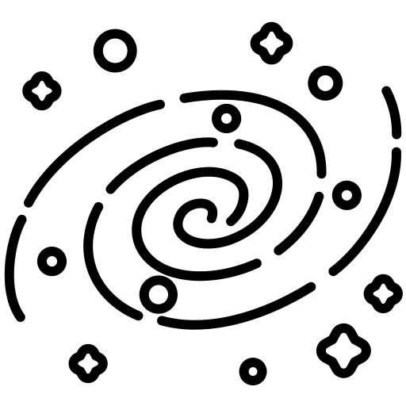
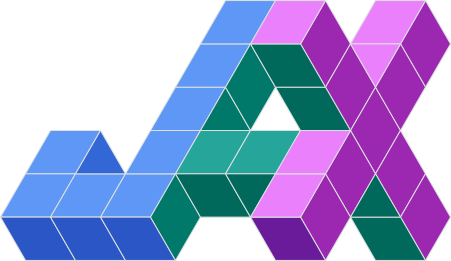
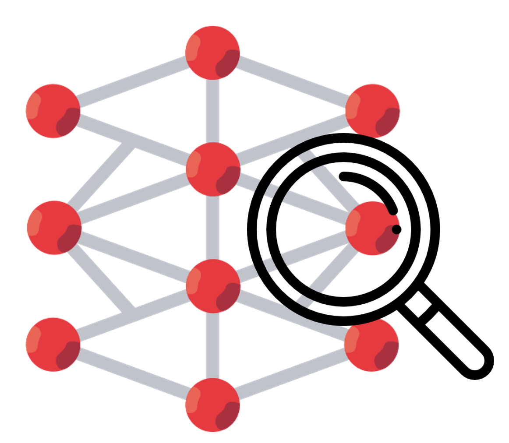
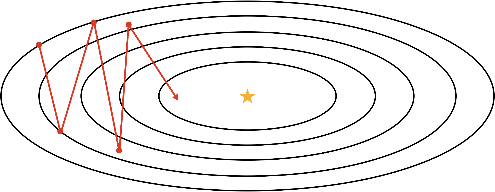
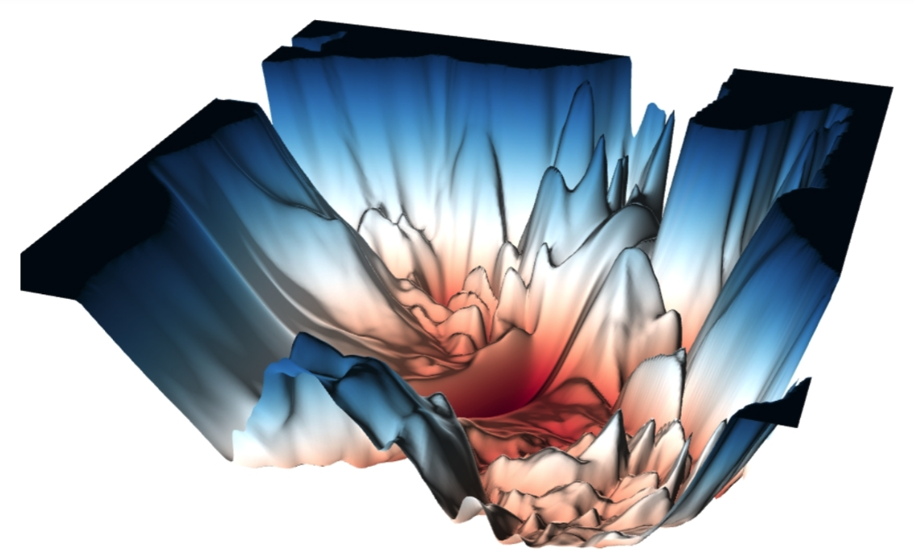
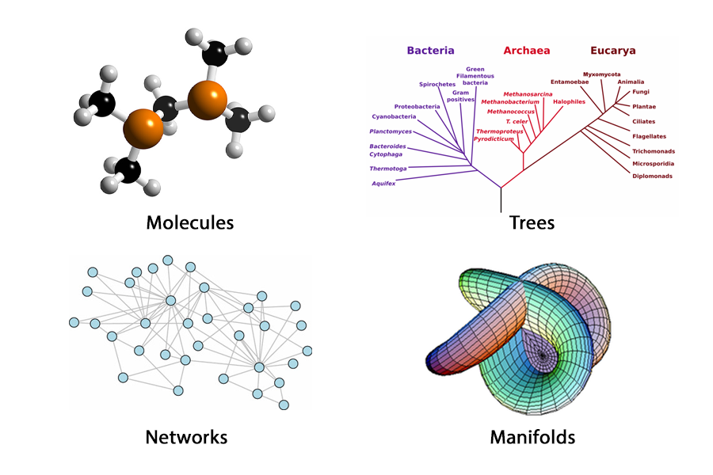
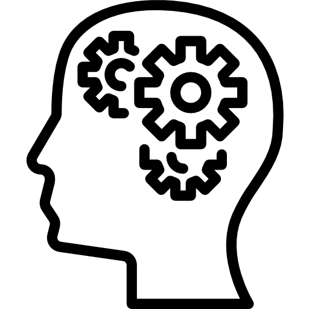

# Research Participation (for Undergrad Students)
MLLab always welcomes undergraduate students to participate in research. The projects below are the research topics that the lab is currently interested in and intends to proceed. Interested undergraduate students should check the list before applying for research participation and contact their advisor via email. This page will be continuously updated. (Last modified )

# Machine Learning Free Topics - Advisors: All
Any other interesting research ideas other than the topics listed below? It looks interesting, but are you wondering if this is also machine learning research? If you want to learn machine learning but don't know where to start, feel free to contact us anytime!
-

# Machine Unlearning - Advisors: Jungseul Ok / Dongwoo Kim / Sangdon Park
As shown in the recent case of 이루다, machine learning algorithms always have problems that can expose personal and sensitive information. The simplest way to solve this problem is to train the model anew after removing such sensitive information, but this re-learning is only a workaround for solving problems that may arise at any time. Machine Unlearning is a methodology for selectively removing specific information from an already trained model. Students will study what conditions must be satisfied for successful unlearning through participation in this study.
References- Nguyen, Quoc Phong, Bryan Kian Hsiang Low, and Patrick Jaillet. "Variational Bayesian Unlearning." NuerIPS 2020.
- Golatkar, Aditya, Alessandro Achille, and Stefano Soatto. "Eternal Sunshine of the Spotless Net: Selective Forgetting in Deep Networks." CVPR 2020.
- Yoon, Youngsik, et al. "Few-Shot Unlearning by Model Inversion." arXiv preprint 2022
-

# Privacy Leakage in Federated Learning - Advisor: Jungseul Ok
Federated Learning is a machine learning framework that enables multiple users to learn large-scale models without worrying about personal information leakage by enabling learning without sending personal data to a central server. For this large-scale learning, only the learning signal (the differential value of the neural net model) is transmitted to the server, not the data transmission, and according to various recent research results, even this method is not 100% safe from personal information leakage. Participation in this study aims to find out under what circumstances information leakage can be aggravated and what methodologies can be used to solve these problems.
References- Jinwoo Jeon*, Jaechang Kim*, Kangwook Lee, Sewoong Oh, and Jungseul Ok, "Gradient Inversion with Generative Image Prior", NeurIPS, 2021
-

# Implicit Function for Natural Data (Sound/Image) - Advisor: Jungseul Ok
Traditionally, natural signals have been presented discretely, such as pixels in images and sampling frequencies in sound. However, if the implicit function is used, the analog signal of nature can be expressed continuously. Specifically, it represents the coordinate values and their corresponding signals as a continuous function. In this way, natural data such as sound/image can be expressed regardless of resolution, and furthermore, infinite resolution expression can be expected. This study aims to find out what methodologies can be used to effectively map natural data to implicit functions and aims to utilize INR for various tasks by increasing its representation power.
References- Vincent Sitzmann, et al. "Implicit Neural Representations with Periodic Activation Functions" NeurIPS 2020.
- Ben Mildenhall, et al. "NeRF: Representing Scenes as Neural Radiance Fields for View Synthesis" ECCV 2020.
- Jaechang Kim*, Yunjoo Lee*, Seunghoon Hong, and Jungseul Ok, "Learning Continuous Representation of Audio for Arbitrary Scale Super Resolution" , ICASSP 2022.
-

# Deep Reinforcement Learning with Prior- Advisor: Jungseul Ok
Deep reinforcement learning (DRL) is a learning method which approximates functions in traditional reinforcement learning (RL) algorithms using deep neural networks. By virtue of deep learning, DRL can outperform traditional RL methods and solve problems difficult for traditional RL to deal with. However, low data efficiency and poor generalization performance remain major challenges in DRL. In this work, students aim to increase sample-efficiency of DRL using pre-existing algorithms, or to increase generalization performance using prior knowledge like data augmentation or Lipschitz continuity.
References- Krishan Rana, et al. "Multiplicative Controller Fusion: Leveraging Algorithmic Priors for Sample-efficient Reinforcement Learning and Safe Sim-To-Real Transfer" IROS 2020.
- Nicklas Hansen, and Xiaolong Wang. "Generalization in Reinforcement Learning by Soft Data Augmentation" ICRA 2021.
- Roberta Raileanu, and Rob Fergus."Decoupling Value and Policy for Generalization in Reinforcement Learning" ICML 2021.
-

# Deep Learning with Human-data - Advisor: Jungseul Ok
Deep learning achieves outstanding performance across diverse domains by utilizing large datasets. However, labeling such large datasets is prohibitively time-consuming and labor-intensive. Furthermore, as human has non-zero probability to make mistakes, we easily find noisy labels within widely used datasets including ImageNet and PASCAL VOC. In this work, we aim to design efficient frameworks considering various factors of human-generated data.
References- Hoyoung Kim*, Seunghyuk Cho*, Dongwoo Kim, and Jungseul Ok, "Robust Deep Learning from Crowds with Belief Propagation" AISTATS 2022.
- Hoyoung Kim, Minhyeon Oh, Sehyun Hwang, Suha Kwak, and Jungseul Ok, "Adaptive Superpixel for Active Learning in Semantic Segmentation" ICCV 2023.
- Sehyun Hwang, Sohyun Lee, Hoyoung Kim, Minhyeon Oh, Jungseul Ok, and Suha Kwak "Active Learning for Semantic Segmentation with Multi-class Label Query" NeurIPS 2023.
-

# Graph Neural Network - Advisors: Dongwoo Kim
Graph neural networks (GNNs) generalize the existing deep learning techniques to graph structured data including biological networks, molecular graphs, academic networks, and knowledge graphs. In this project, we aim to improve the existing GNNs to be more expressive and sample-efficient. We are particularly interested in directions like architecture design, data augmentation, and self-supervised learning.
References- Kipf, Thomas N., and Max Welling. "Semi-supervised Classification with Graph Convolutional Networks." ICLR 2017.
- Xu, Keyulu, et al. "How Powerful are Graph Neural Networks?." ICLR 2019.
-

# Machine Learning in Non-Euclidean Spaces - Advisor: Dongwoo Kim
Most of well-known machine learning algorithms are working in Euclidean space. However, many scientific fields study data whose underlying structure is non-Euclidean. Through this research paticipation, students will study different types of non-Euclidean spaces and develop a new machine learning algorithm working in these spaces.
References- Michael M Bronstein, Joan Bruna, Yann LeCun, Arthur Szlam, Pierre Vandergheynst, Geometric Deep Learning: Going beyond Euclidean data
- Seunghyuk Cho, Juyong Lee, Jaesik Park, Dongwoo Kim, A Rotated Hyperbolic Wrapped Normal Distribution for Hierarchical Representation Learning NeurIPS 2022.
- Seunghyuk Cho, Juyong Lee, Dongwoo Kim, Hyperbolic VAE via Latent Gaussian Distributions NeurIPS 2023.
-

# Machine Learning for Dynamics System Discovery - Advisor: Dongwoo Kim
Research to discover underlying dynamical systems using machine learning gets increasing attention to understand and predict various physical phenomena. The main problems are incorporating physical knowledge well into the neural net and handling the various characteristics of real-world data. We are particularly interested in finding the coordinates that provide the most simple representation of the system and dealing with noisy data or data from various environments.
References- Yuan Yin, Vincent LE GUEN, Jérémie DONA, Emmanuel de Bezenac, Ibrahim Ayed, Nicolas THOME, patrick gallinari, Augmenting Physical Models with Deep Networks for Complex Dynamics Forecasting
- Matthieu Kirchmeyer, Yuan Yin, Jeremie Dona, Nicolas Baskiotis, Alain Rakotomamonjy, Patrick Gallinari, Generalizing to New Physical Systems via Context-Informed Dynamics Model
- Steven L. Brunton, Joshua L. Proctor, J. Nathan Kutz, Discovering governing equations from data by sparse identification of nonlinear dynamical systems
-

# JAX - Advisor: Namhoon Lee
JAX is a new framework developed by Google for high-performance ML research; it is becoming increasingly more popular with its acceleration and being adopted by major subfields that require large-scale scientific computing. Student researchers on this project will work on implementing and evaluating ML algorithms using JAX, and the topics will include, but not be limited to, deep learning and distributed optimization. This post is ideally for CS majors or those who have some experience in functional programming.
-

# Optimization for sparse neural network training - Advisor: Namhoon Lee
Today’s deep neural networks require large memory and inference cost. Introducing sparsity can remedy the problem by skipping unnecessary computations. This project aims to fill the gap in existing methods by inducing sparsity based on various optimization principles during the training of neural networks.
-

# Interpretable Machine Learning - Advisor: Namhoon Lee
Current deep neural networks are so complex that human cannot easily understand the decision making system of the models. Interpretable machine learning models try to address this issue by utilizing high level concepts or designing transparent architectures. In this project, we aim to the improve the existing models from both data-centric and model-centric view.
References- Pang Wei Koh et al. "Concept Bottleneck Models" ICML 2020.
-

# Stochastic optimization for machine learning - Advisor: Namhoon Lee
Optimization algorithms, especially stochastic gradient descent (SGD) and its variants, play an important role in the success of deep neural networks. Why do such simple algorithms work well in practice? Evidence shows that their dynamical behaviors with implicit bias may drive to flat minima. We are interested in investigating more into their optimization dynamics via mathematical tools such as noise analysis, differential equation approximation, etc. This research project could potentially lead us to come up with new optimization algorithms for large-scale machine learning problems.
References- Stanisław Jastrzębski et al. "Three factors influencing minima in SGD" ICANN 2018
- Lei Wu, Mingze Wang, Weijie Su. "When does SGD favor flat minima? A quantitative characterization via linear stability" NeurIPS 2022
- Sadhika Malladi et al. "On the SDEs and Scaling Rules for Adaptive Gradient Algorithms" NeurIPS 2022
-

# Improving neural network training based on loss landscape analysis - Advisor: Namhoon Lee
The sharpness of the loss surface is a good geometric property that captures the generalization of neural networks. Since the seminal work of Foret et al. (2021), sharpness-aware minimization — a class of algorithms that lead convergence to flat minima — has been used in various machine learning applications to improve performance measures. However, existing algorithms to enforce flatness require a lot of computations, and in this project we explore numerical and computational tools in robust optimization to address such an issue.
References- Pierre Foret et al. "Sharpness-Aware Minimization for Efficiently Improving Generalization" ICLR 2021
-

# Enhancing Efficiency of Large Language Models - Advisor: Namhoon Lee
Large Language Models (LLMs), such as GPT, have shown remarkable progresses in Natural Language Processing (NLP) tasks. However, their over-parametrized nature leads to significant computational costs in terms of time and money, limiting their practicality. In this research project, our aim is to enhance the efficiency of LLMs by exploring methods such as parameter pruning and knowledge distillation.
References- Tom B. Brown et al. "Language Models are Few-Shot Learners" NeurIPS 2020
- Hugo Touvron et al. "LLaMA: Open and Efficient Foundation Language Models" arXiv preprint 2023
-

# Geometric Deep Learning - Advisor: Sungsoo Ahn
Geometric deep learning is a new field of machine learning that can learn from complex data like point clouds, graphs, mesh, and manifolds. It seeks for a ``general recipe'' to apply deep neural networks to 3D objects, graphs and manifolds. In this project, we will aim at studying the recent geometric deep learning literature and become the frontiers in this area. We are looking for students confident in mathematics, since since this project requires to study very basic topology, categorical theory, and group theory. See this link for a tutorial on this subject.
References- Victor Garcia Satorras, Emiel Hoogeboom, Max Welling E(n) Graph Neural Networks
- Jakob Hansen, Thomas Gebhart Sheaf Neural Networks
- Cristian Bodnar, Fabrizio Frasca, Yu Guang Wang, Nina Otter, Guido Montúfar, Pietro Liò, Michael Bronstein Weisfeiler and Lehman Go Topological: Message Passing Simplicial Networks
-

# Learning to Combat the Hallucination of Large Language Models - Advisor: Sangdon Park
Large Language Models (LLMs) confidently generate wrong information, which undermines the trust of LLMs as a knowledge base. How to mitigate this? This question has been actively emerged due to the power of ChatGPT. In this research project, we will explore learning methods (e.g., conformal prediction) to answer this question.
References- Andrew Ng’s Twitter Post on the overconfidence of LLMs
- Sangdon Park and Taesoo Kim PAC Neural Prediction Set Learning to Quantify the Uncertainty of Generative Language Models arXiv 2023
-

# Uncertainty Learning via Conformal Prediction - Advisor: Sangdon Park
As ML models are used in practical environments, e.g., ChatGPT or drones, the concerns on the trustworthiness of model predictions have been greatly emerged. In particular, we are interested in rigorous uncertainty learning as the basis for the correctness of predictions, and conformal prediction is a promising method for rigorous uncertainty learning. However, its correctness guarantees depend on the assumptions of data distributions. In this research project, we explore and design practical learning algorithms for conformal prediction under various distributional assumptions.
References- Vladimir Vovk et al. Algorithmic Learning in a Random World 2005
- Anastasios Angelopoulos et al. Uncertainty Sets for Image Classifiers using Conformal Prediction ICLR 2021
- Sangdon Park et al. PAC Confidence Sets for Deep Neural Networks via Calibrated Prediction ICLR 2020
-

# Security and Privacy of LLMs - Advisor: Sangdon Park
The power of LLMs and their daily life use bring concerns on security and privacy issues (e.g., vulnerable code generation and privacy leakage). Then, how severe are the security and privacy issues? How to efficiently and effectively unlearn the issues in LLMs? In this project, we will evaluate LLMs security and privacy concerns and design learning algorithms for mitigation.
-
# LLMs for Code Vulnerability Discovery - Advisor: Sangdon Park
Finding source or binary code vulnerabilities is a long-standing and never-ending problem. The recent advance in LLMs potentially provides clues to further advance the current code vulnerability discovery performance. In this project, we will explore the potentials of LLMs in finding code vulnerabilities.